Number Operations
Orientation Summary From Image
These scalar summaries are exposed through:
bundle_float_orientation
They summarise the edges of an intensity image in one number each. Every pixel gets, from Sobel derivatives gx (along columns) and gy (along rows):
- an edge strength
sqrt(gx² + gy²), which weights the pixel (flat pixels count for nothing); - an edge orientation: the direction along the edge, perpendicular to the gradient. Rows grow downwards, so angles run clockwise on screen:
0°is a horizontal edge,45°a\diagonal (going down to the right),90°a vertical edge,135°a/diagonal.
| Operator | Value |
|---|---|
orientation_energy_0 / _45 / _90 / _135 | Each pixel's strength goes to the nearest of the four orientations; each operator returns the share of the total in its bin. The four sum to 1 (0 on a flat image). |
dominant_orientation | The bin with the largest share, divided by 180°: 0 horizontal, 0.25 \, 0.5 vertical, 0.75 /. A tie goes to the first of these (the grid below gives 0). |
orientation_coherence | The length of the vector Σ strength · (cos 2θ, sin 2θ) divided by Σ strength: 1 when every edge has the same orientation, near 0 when the orientations cancel out (e.g. as many horizontal as vertical edges). Doubling the angle makes θ and θ + 180° count as the same orientation. |
orientation_spread | 1 − orientation_coherence. |
The image maps grad_orientation and orientation_select of the image library use the gradient direction instead (90° away): there, a vertical edge has orientation 0.
Each example below shows the original image, the Sobel derivatives gx and gy (rescaled to black … white for display), the gradient orientation atan(gy, gx) over 180° (black also on flat pixels), and the edge orientation drawn as a small line in each pixel, brighter where the edge is stronger; this is the orientation the scalars use.
Orientation Function Index
orientation_coherencedominant_orientationorientation_energy_0orientation_energy_45orientation_energy_90orientation_energy_135orientation_spread
All seven values on all seven example images below (rows: images, columns: operators):
images = [
"vertical bars" => orientation_coherence_img,
"/ step (135°)" => dominant_orientation_img,
"horizontal step" => orientation_energy_0_img,
"\\ step (45°)" => orientation_energy_45_img,
"vertical step" => orientation_energy_90_img,
"/ line (135°)" => orientation_energy_135_img,
"grid" => orientation_spread_img,
]
ops = [:orientation_energy_0, :orientation_energy_45, :orientation_energy_90, :orientation_energy_135,
:dominant_orientation, :orientation_coherence, :orientation_spread]
short = ["E0", "E45", "E90", "E135", "dominant", "coherence", "spread"]
println(rpad("", 17), join(lpad.(short, 10)))
for (name, img) in images
values = [g_call(UTCGP.bundle_float_orientation[op].fn, img) for op in ops]
println(rpad(name, 17), join(lpad.(string.(round.(values, digits = 2)), 10)))
end E0 E45 E90 E135 dominant coherence spread
vertical bars 0.0 0.0 1.0 0.0 0.5 1.0 0.0
/ step (135°) 0.01 0.0 0.01 0.98 0.75 0.99 0.01
horizontal step 1.0 0.0 0.0 0.0 0.0 1.0 0.0
\ step (45°) 0.01 0.98 0.01 0.0 0.25 0.99 0.01
vertical step 0.0 0.0 1.0 0.0 0.5 1.0 0.0
/ line (135°) 0.01 0.0 0.01 0.98 0.75 0.98 0.02
grid 0.45 0.05 0.45 0.05 0.0 0.0 1.0orientation_coherence
Measure how aligned the edges are. The vertical bars have only vertical edges, so the coherence is 1.
img = orientation_coherence_img
fn = g_timed(UTCGP.bundle_float_orientation[:orientation_coherence].fn)
fn(img)1.0

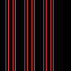
dominant_orientation
The edge orientation bin with the most edge strength. This step has a single / edge (135°), so the result is 0.75.
img = dominant_orientation_img
fn = g_timed(UTCGP.bundle_float_orientation[:dominant_orientation].fn)
fn(img)0.75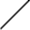
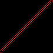
orientation_energy_0
Share of the edge strength on horizontal edges. The horizontal step gives 1.
img = orientation_energy_0_img
fn = g_timed(UTCGP.bundle_float_orientation[:orientation_energy_0].fn)
fn(img)1.0000000000000002
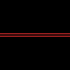
orientation_energy_45
Share of the edge strength on \ diagonal edges (down to the right, 45° clockwise). The \ step gives (nearly) 1.
img = orientation_energy_45_img
fn = g_timed(UTCGP.bundle_float_orientation[:orientation_energy_45].fn)
fn(img)0.9807895209742905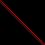
orientation_energy_90
Share of the edge strength on vertical edges. The vertical step gives 1.
img = orientation_energy_90_img
fn = g_timed(UTCGP.bundle_float_orientation[:orientation_energy_90].fn)
fn(img)0.9999999999999994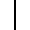

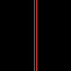
orientation_energy_135
Share of the edge strength on / diagonal edges (135° clockwise). The / line gives (nearly) 1.
img = orientation_energy_135_img
fn = g_timed(UTCGP.bundle_float_orientation[:orientation_energy_135].fn)
fn(img)0.977275349874949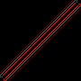
orientation_spread
1 − orientation_coherence. The grid has as much horizontal as vertical edge strength; doubled, these angles point opposite ways and cancel, so the spread is close to 1.
img = orientation_spread_img
fn = g_timed(UTCGP.bundle_float_orientation[:orientation_spread].fn)
fn(img)0.9999999999999994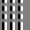
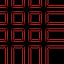
Image To Float Region Statistics
These functions reduce a square window of an image to one Float64. They are exposed through:
bundle_number_regionFromImg
Every operator is called as fn(img, cx, cy). (cx, cy) is the window's centre in normalised coordinates: cx picks the column and cy the row, 0 being the first pixel and 1 the last (0.5, 0.5 is the image centre). Values outside [0, 1] are clamped, NaN/±Inf mean 0.5.
- Statistics:
mean,std,min,max,sum,median,range(max − min),energy(mean of the squared values) andentropy(the window's values are rescaled to its own min … max, put into 8 bins, and the Shannon entropy of the bin counts is returned in bits:0for a uniform window, up to3). contrast: the mean of the window minus the mean of the ring around it, i.e. a larger window centred at the same point with the inner window removed. Positive when the centre is brighter than its surroundings.- Window sizes: without suffix the window is
3 × 3(and the contrast ring comes from a5 × 5window). With_5p,_10pand_20pthe side is 5%, 10% or 20% of the image's shorter side, rounded, made odd, and at least3pixels; the contrast ring then comes from a window of half-width2 · half + 1(at most half the image). - Borders: windows are clipped at the image border (no padding), so near a border fewer pixels are used. The ring of
contrastis taken from the clipped windows too. - Binary images count as
0/1; segment images use their label numbers.
Window sides for a few image sizes (the _5p and _10p windows of small images are often just the 3 × 3 minimum):
using UTCGP
using ImageCore: N0f8
R = UTCGP.number_regionFromImg
side(half) = 2half + 1
println(rpad("image", 10), rpad("_5p", 18), rpad("_10p", 18), "_20p (window / contrast outer window)")
for n in (28, 30, 64, 128, 256)
img = SImageND(IntensityPixel{N0f8}.(zeros(n, n)))
cells = map((0.05, 0.10, 0.20)) do pct
half = R._region_half_size_from_percent(img, pct)
string(side(half), " / ", side(R._region_contrast_outer_half_size(img, half)))
end
println(rpad("$(n)×$(n)", 10), join(rpad.(cells, 18)))
endimage _5p _10p _20p (window / contrast outer window)
28×28 3 / 7 3 / 7 7 / 15
30×30 3 / 7 3 / 7 7 / 15
64×64 3 / 7 7 / 15 13 / 27
128×128 7 / 15 13 / 27 27 / 55
256×256 13 / 27 27 / 55 51 / 103In the pictures below, the red square is the window the statistic reads (after clipping), and for the contrast operators the green square is the outer window whose ring (green minus red) is compared to it. The boxes come from the same bounds functions the operators use.
Region Function Index
region_meanregion_stdregion_minregion_maxregion_sumregion_medianregion_rangeregion_contrastregion_energyregion_entropyregion_mean_5pregion_mean_10pregion_mean_20pregion_std_5pregion_std_10pregion_std_20pregion_min_5pregion_min_10pregion_min_20pregion_max_5pregion_max_10pregion_max_20pregion_sum_5pregion_sum_10pregion_sum_20pregion_median_5pregion_median_10pregion_median_20pregion_range_5pregion_range_10pregion_range_20pregion_contrast_5pregion_contrast_10pregion_contrast_20pregion_energy_5pregion_energy_10pregion_energy_20pregion_entropy_5pregion_entropy_10pregion_entropy_20p
region_mean
Mean over a fixed 3x3 local patch.
fn = UTCGP.bundle_number_regionFromImg[:region_mean].fn
(
fn(region_intensity, 0.4, 0.7),
fn(region_binary, 0.4, 0.7),
fn(region_segment, 0.4, 0.7),
)Coordinates: (0.4, 0.7)
Result: (0.5660130718954248, 1.0, 2.0)
| Intensity | Binary | Segment |
|---|---|---|
 |  |  |
region_std
Standard deviation over a fixed 3x3 local patch.
fn = UTCGP.bundle_number_regionFromImg[:region_std].fn
(
fn(region_intensity, 0.7, 0.3),
fn(region_binary, 0.7, 0.3),
fn(region_segment, 0.7, 0.3),
)Coordinates: (0.7, 0.3)
Result: (0.020038836231053462, 0.5, 0.5)
| Intensity | Binary | Segment |
|---|---|---|
 |  |  |
region_min
Minimum over a fixed 3x3 local patch.
fn = UTCGP.bundle_number_regionFromImg[:region_min].fn
(
fn(region_intensity, 0.1, 0.8),
fn(region_binary, 0.1, 0.8),
fn(region_segment, 0.1, 0.8),
)Coordinates: (0.1, 0.8)
Result: (0.43137254901960786, 0.0, 4.0)
| Intensity | Binary | Segment |
|---|---|---|
 |  |  |
region_max
Maximum over a fixed 3x3 local patch.
fn = UTCGP.bundle_number_regionFromImg[:region_max].fn
(
fn(region_intensity, 0.4, 0.4),
fn(region_binary, 0.4, 0.4),
fn(region_segment, 0.4, 0.4),
)Coordinates: (0.4, 0.4)
Result: (0.9019607843137255, 1.0, 2.0)
| Intensity | Binary | Segment |
|---|---|---|
 |  |  |
region_sum
Sum over a fixed 3x3 local patch.
fn = UTCGP.bundle_number_regionFromImg[:region_sum].fn
(
fn(region_intensity, 0.7, 0.0),
fn(region_binary, 0.7, 0.0),
fn(region_segment, 0.7, 0.0),
)Coordinates: (0.7, 0.0)
Result: (2.2549019607843137, 0.0, 8.0)
| Intensity | Binary | Segment |
|---|---|---|
 |  |  |
region_median
Median over a fixed 3x3 local patch.
fn = UTCGP.bundle_number_regionFromImg[:region_median].fn
(
fn(region_intensity, 0.1, 0.5),
fn(region_binary, 0.1, 0.5),
fn(region_segment, 0.1, 0.5),
)Coordinates: (0.1, 0.5)
Result: (0.3333333333333333, 0.0, 1.0)
| Intensity | Binary | Segment |
|---|---|---|
 |  |  |
region_range
Range over a fixed 3x3 local patch.
fn = UTCGP.bundle_number_regionFromImg[:region_range].fn
(
fn(region_intensity, 0.4, 0.1),
fn(region_binary, 0.4, 0.1),
fn(region_segment, 0.4, 0.1),
)Coordinates: (0.4, 0.1)
Result: (0.06666666666666665, 1.0, 0.0)
| Intensity | Binary | Segment |
|---|---|---|
 |  |  |
region_contrast
Mean of the 3x3 window minus the mean of the ring around it (the 5x5 window without the 3x3 one).
fn = UTCGP.bundle_number_regionFromImg[:region_contrast].fn
(
fn(region_intensity, 0.7, 0.6),
fn(region_binary, 0.7, 0.6),
fn(region_segment, 0.7, 0.6),
)Coordinates: (0.7, 0.6)
Result: (-5.551115123125783e-17, 0.10416666666666663, 0.10416666666666652)
| Intensity | Binary | Segment |
|---|---|---|
 |  |  |
region_energy
Mean squared value over a fixed 3x3 local patch.
fn = UTCGP.bundle_number_regionFromImg[:region_energy].fn
(
fn(region_intensity, 0.1, 0.2),
fn(region_binary, 0.1, 0.2),
fn(region_segment, 0.1, 0.2),
)Coordinates: (0.1, 0.2)
Result: (0.034168055021572906, 0.3333333333333333, 1.0)
| Intensity | Binary | Segment |
|---|---|---|
 |  |  |
region_entropy
Entropy (bits) of an 8-bin histogram of a fixed 3x3 local patch.
fn = UTCGP.bundle_number_regionFromImg[:region_entropy].fn
(
fn(region_intensity, 0.4, 0.7),
fn(region_binary, 0.4, 0.7),
fn(region_segment, 0.4, 0.7),
)Coordinates: (0.4, 0.7)
Result: (2.197159723424149, 0.0, 0.0)
| Intensity | Binary | Segment |
|---|---|---|
 |  |  |
region_mean_5p
Mean over a local patch sized from 5% of min(image side).
fn = UTCGP.bundle_number_regionFromImg[:region_mean_5p].fn
(
fn(region_intensity, 0.7, 0.3),
fn(region_binary, 0.7, 0.3),
fn(region_segment, 0.7, 0.3),
)Coordinates: (0.7, 0.3)
Result: (0.5172113289760348, 0.6666666666666666, 1.3333333333333333)
| Intensity | Binary | Segment |
|---|---|---|
 |  |  |
region_mean_10p
Mean over a local patch sized from 10% of min(image side).
fn = UTCGP.bundle_number_regionFromImg[:region_mean_10p].fn
(
fn(region_intensity, 0.1, 0.8),
fn(region_binary, 0.1, 0.8),
fn(region_segment, 0.1, 0.8),
)Coordinates: (0.1, 0.8)
Result: (0.583442265795207, 0.0, 4.0)
| Intensity | Binary | Segment |
|---|---|---|
 |  |  |
region_mean_20p
Mean over a local patch sized from 20% of min(image side).
fn = UTCGP.bundle_number_regionFromImg[:region_mean_20p].fn
(
fn(region_intensity, 0.4, 0.4),
fn(region_binary, 0.4, 0.4),
fn(region_segment, 0.4, 0.4),
)Coordinates: (0.4, 0.4)
Result: (0.689395758303321, 0.1836734693877551, 1.8571428571428572)
| Intensity | Binary | Segment |
|---|---|---|
 |  |  |
region_std_5p
Standard deviation over a local patch sized from 5% of min(image side).
fn = UTCGP.bundle_number_regionFromImg[:region_std_5p].fn
(
fn(region_intensity, 0.7, 0.0),
fn(region_binary, 0.7, 0.0),
fn(region_segment, 0.7, 0.0),
)Coordinates: (0.7, 0.0)
Result: (0.017610710569029395, 0.0, 0.5163977794943223)
| Intensity | Binary | Segment |
|---|---|---|
 |  |  |
region_std_10p
Standard deviation over a local patch sized from 10% of min(image side).
fn = UTCGP.bundle_number_regionFromImg[:region_std_10p].fn
(
fn(region_intensity, 0.1, 0.5),
fn(region_binary, 0.1, 0.5),
fn(region_segment, 0.1, 0.5),
)Coordinates: (0.1, 0.5)
Result: (0.02084342316222481, 0.0, 0.0)
| Intensity | Binary | Segment |
|---|---|---|
 |  |  |
region_std_20p
Standard deviation over a local patch sized from 20% of min(image side).
fn = UTCGP.bundle_number_regionFromImg[:region_std_20p].fn
(
fn(region_intensity, 0.4, 0.1),
fn(region_binary, 0.4, 0.1),
fn(region_segment, 0.4, 0.1),
)Coordinates: (0.4, 0.1)
Result: (0.04755845543599683, 0.39123039821797606, 0.3535533905932735)
| Intensity | Binary | Segment |
|---|---|---|
 |  |  |
region_min_5p
Minimum over a local patch sized from 5% of min(image side).
fn = UTCGP.bundle_number_regionFromImg[:region_min_5p].fn
(
fn(region_intensity, 0.7, 0.6),
fn(region_binary, 0.7, 0.6),
fn(region_segment, 0.7, 0.6),
)Coordinates: (0.7, 0.6)
Result: (0.2, 0.0, 2.0)
| Intensity | Binary | Segment |
|---|---|---|
 |  |  |
region_min_10p
Minimum over a local patch sized from 10% of min(image side).
fn = UTCGP.bundle_number_regionFromImg[:region_min_10p].fn
(
fn(region_intensity, 0.1, 0.2),
fn(region_binary, 0.1, 0.2),
fn(region_segment, 0.1, 0.2),
)Coordinates: (0.1, 0.2)
Result: (0.14901960784313725, 0.0, 1.0)
| Intensity | Binary | Segment |
|---|---|---|
 |  |  |
region_min_20p
Minimum over a local patch sized from 20% of min(image side).
fn = UTCGP.bundle_number_regionFromImg[:region_min_20p].fn
(
fn(region_intensity, 0.4, 0.7),
fn(region_binary, 0.4, 0.7),
fn(region_segment, 0.4, 0.7),
)Coordinates: (0.4, 0.7)
Result: (0.4666666666666667, 0.0, 1.0)
| Intensity | Binary | Segment |
|---|---|---|
 |  |  |
region_max_5p
Maximum over a local patch sized from 5% of min(image side).
fn = UTCGP.bundle_number_regionFromImg[:region_max_5p].fn
(
fn(region_intensity, 0.7, 0.3),
fn(region_binary, 0.7, 0.3),
fn(region_segment, 0.7, 0.3),
)Coordinates: (0.7, 0.3)
Result: (0.5490196078431373, 1.0, 2.0)
| Intensity | Binary | Segment |
|---|---|---|
 |  |  |
region_max_10p
Maximum over a local patch sized from 10% of min(image side).
fn = UTCGP.bundle_number_regionFromImg[:region_max_10p].fn
(
fn(region_intensity, 0.1, 0.8),
fn(region_binary, 0.1, 0.8),
fn(region_segment, 0.1, 0.8),
)Coordinates: (0.1, 0.8)
Result: (1.0, 0.0, 4.0)
| Intensity | Binary | Segment |
|---|---|---|
 |  |  |
region_max_20p
Maximum over a local patch sized from 20% of min(image side).
fn = UTCGP.bundle_number_regionFromImg[:region_max_20p].fn
(
fn(region_intensity, 0.4, 0.4),
fn(region_binary, 0.4, 0.4),
fn(region_segment, 0.4, 0.4),
)Coordinates: (0.4, 0.4)
Result: (0.9019607843137255, 1.0, 2.0)
| Intensity | Binary | Segment |
|---|---|---|
 |  |  |
region_sum_5p
Sum over a local patch sized from 5% of min(image side).
fn = UTCGP.bundle_number_regionFromImg[:region_sum_5p].fn
(
fn(region_intensity, 0.7, 0.0),
fn(region_binary, 0.7, 0.0),
fn(region_segment, 0.7, 0.0),
)Coordinates: (0.7, 0.0)
Result: (2.2549019607843137, 0.0, 8.0)
| Intensity | Binary | Segment |
|---|---|---|
 |  |  |
region_sum_10p
Sum over a local patch sized from 10% of min(image side).
fn = UTCGP.bundle_number_regionFromImg[:region_sum_10p].fn
(
fn(region_intensity, 0.1, 0.5),
fn(region_binary, 0.1, 0.5),
fn(region_segment, 0.1, 0.5),
)Coordinates: (0.1, 0.5)
Result: (3.0, 0.0, 9.0)
| Intensity | Binary | Segment |
|---|---|---|
 |  |  |
region_sum_20p
Sum over a local patch sized from 20% of min(image side).
fn = UTCGP.bundle_number_regionFromImg[:region_sum_20p].fn
(
fn(region_intensity, 0.4, 0.1),
fn(region_binary, 0.4, 0.1),
fn(region_segment, 0.4, 0.1),
)Coordinates: (0.4, 0.1)
Result: (13.88627450980393, 9.0, 91.0)
| Intensity | Binary | Segment |
|---|---|---|
 |  |  |
region_median_5p
Median over a local patch sized from 5% of min(image side).
fn = UTCGP.bundle_number_regionFromImg[:region_median_5p].fn
(
fn(region_intensity, 0.7, 0.6),
fn(region_binary, 0.7, 0.6),
fn(region_segment, 0.7, 0.6),
)Coordinates: (0.7, 0.6)
Result: (0.2, 1.0, 3.0)
| Intensity | Binary | Segment |
|---|---|---|
 |  |  |
region_median_10p
Median over a local patch sized from 10% of min(image side).
fn = UTCGP.bundle_number_regionFromImg[:region_median_10p].fn
(
fn(region_intensity, 0.1, 0.2),
fn(region_binary, 0.1, 0.2),
fn(region_segment, 0.1, 0.2),
)Coordinates: (0.1, 0.2)
Result: (0.1843137254901961, 0.0, 1.0)
| Intensity | Binary | Segment |
|---|---|---|
 |  |  |
region_median_20p
Median over a local patch sized from 20% of min(image side).
fn = UTCGP.bundle_number_regionFromImg[:region_median_20p].fn
(
fn(region_intensity, 0.4, 0.7),
fn(region_binary, 0.4, 0.7),
fn(region_segment, 0.4, 0.7),
)Coordinates: (0.4, 0.7)
Result: (0.5843137254901961, 1.0, 2.0)
| Intensity | Binary | Segment |
|---|---|---|
 |  |  |
region_range_5p
Range over a local patch sized from 5% of min(image side).
fn = UTCGP.bundle_number_regionFromImg[:region_range_5p].fn
(
fn(region_intensity, 0.7, 0.3),
fn(region_binary, 0.7, 0.3),
fn(region_segment, 0.7, 0.3),
)Coordinates: (0.7, 0.3)
Result: (0.06666666666666671, 1.0, 1.0)
| Intensity | Binary | Segment |
|---|---|---|
 |  |  |
region_range_10p
Range over a local patch sized from 10% of min(image side).
fn = UTCGP.bundle_number_regionFromImg[:region_range_10p].fn
(
fn(region_intensity, 0.1, 0.8),
fn(region_binary, 0.1, 0.8),
fn(region_segment, 0.1, 0.8),
)Coordinates: (0.1, 0.8)
Result: (0.5686274509803921, 0.0, 0.0)
| Intensity | Binary | Segment |
|---|---|---|
 |  |  |
region_range_20p
Range over a local patch sized from 20% of min(image side).
fn = UTCGP.bundle_number_regionFromImg[:region_range_20p].fn
(
fn(region_intensity, 0.4, 0.4),
fn(region_binary, 0.4, 0.4),
fn(region_segment, 0.4, 0.4),
)Coordinates: (0.4, 0.4)
Result: (0.48627450980392156, 1.0, 1.0)
| Intensity | Binary | Segment |
|---|---|---|
 |  |  |
region_contrast_5p
Mean of the window sized from 5% of min(image side) minus the mean of the ring around it.
fn = UTCGP.bundle_number_regionFromImg[:region_contrast_5p].fn
(
fn(region_intensity, 0.7, 0.0),
fn(region_binary, 0.7, 0.0),
fn(region_segment, 0.7, 0.0),
)Coordinates: (0.7, 0.0)
Result: (0.08615567439096855, 0.0, -0.12121212121212133)
| Intensity | Binary | Segment |
|---|---|---|
 |  |  |
region_contrast_10p
Mean of the window sized from 10% of min(image side) minus the mean of the ring around it.
fn = UTCGP.bundle_number_regionFromImg[:region_contrast_10p].fn
(
fn(region_intensity, 0.1, 0.5),
fn(region_binary, 0.1, 0.5),
fn(region_segment, 0.1, 0.5),
)Coordinates: (0.1, 0.5)
Result: (-1.6653345369377348e-16, 0.0, 0.0)
| Intensity | Binary | Segment |
|---|---|---|
 |  |  |
region_contrast_20p
Mean of the window sized from 20% of min(image side) minus the mean of the ring around it.
fn = UTCGP.bundle_number_regionFromImg[:region_contrast_20p].fn
(
fn(region_intensity, 0.4, 0.1),
fn(region_binary, 0.4, 0.1),
fn(region_segment, 0.4, 0.1),
)Coordinates: (0.4, 0.1)
Result: (-0.18263098342785372, -0.21287825475017594, 0.270935960591133)
| Intensity | Binary | Segment |
|---|---|---|
 |  |  |
region_energy_5p
Mean squared value over a local patch sized from 5% of min(image side).
fn = UTCGP.bundle_number_regionFromImg[:region_energy_5p].fn
(
fn(region_intensity, 0.7, 0.6),
fn(region_binary, 0.7, 0.6),
fn(region_segment, 0.7, 0.6),
)Coordinates: (0.7, 0.6)
Result: (0.04000000000000001, 0.6666666666666666, 7.333333333333333)
| Intensity | Binary | Segment |
|---|---|---|
 |  |  |
region_energy_10p
Mean squared value over a local patch sized from 10% of min(image side).
fn = UTCGP.bundle_number_regionFromImg[:region_energy_10p].fn
(
fn(region_intensity, 0.1, 0.2),
fn(region_binary, 0.1, 0.2),
fn(region_segment, 0.1, 0.2),
)Coordinates: (0.1, 0.2)
Result: (0.034168055021572906, 0.3333333333333333, 1.0)
| Intensity | Binary | Segment |
|---|---|---|
 |  |  |
region_energy_20p
Mean squared value over a local patch sized from 20% of min(image side).
fn = UTCGP.bundle_number_regionFromImg[:region_energy_20p].fn
(
fn(region_intensity, 0.4, 0.7),
fn(region_binary, 0.4, 0.7),
fn(region_segment, 0.4, 0.7),
)Coordinates: (0.4, 0.7)
Result: (0.3962604649703017, 0.5102040816326531, 5.1020408163265305)
| Intensity | Binary | Segment |
|---|---|---|
 |  |  |
region_entropy_5p
Entropy (bits) of an 8-bin histogram of a local patch sized from 5% of min(image side).
fn = UTCGP.bundle_number_regionFromImg[:region_entropy_5p].fn
(
fn(region_intensity, 0.7, 0.3),
fn(region_binary, 0.7, 0.3),
fn(region_segment, 0.7, 0.3),
)Coordinates: (0.7, 0.3)
Result: (2.197159723424149, 0.9182958340544896, 0.9182958340544896)
| Intensity | Binary | Segment |
|---|---|---|
 |  |  |
region_entropy_10p
Entropy (bits) of an 8-bin histogram of a local patch sized from 10% of min(image side).
fn = UTCGP.bundle_number_regionFromImg[:region_entropy_10p].fn
(
fn(region_intensity, 0.1, 0.8),
fn(region_binary, 0.1, 0.8),
fn(region_segment, 0.1, 0.8),
)Coordinates: (0.1, 0.8)
Result: (0.7642045065086203, 0.0, 0.0)
| Intensity | Binary | Segment |
|---|---|---|
 |  |  |
region_entropy_20p
Entropy (bits) of an 8-bin histogram of a local patch sized from 20% of min(image side).
fn = UTCGP.bundle_number_regionFromImg[:region_entropy_20p].fn
(
fn(region_intensity, 0.4, 0.4),
fn(region_binary, 0.4, 0.4),
fn(region_segment, 0.4, 0.4),
)Coordinates: (0.4, 0.4)
Result: (1.4796352603999388, 0.6880476235340796, 0.5916727785823275)
| Intensity | Binary | Segment |
|---|---|---|
 |  |  |
Haar Features From Image
These scalar Haar-like features are exposed through:
bundle_number_haarFromImg
A Haar feature compares the mean brightness of neighbouring rectangles inside a square window. Every operator is called as fn(img, position, size):
position(0…1) picks the window's centre pixel with a single number: the pixels are numbered column by column (down the first column, then down the second, …, Julia's column-major order), andpositionis the fraction of the way through that list.0is the top-left pixel,1the bottom-right one. Values outside[0, 1]are clamped;NaN/±Infmean0.5.sizeis the half-width of the window:round(abs(size)), at least1. The window is(2·size + 1) × (2·size + 1)pixels and is clipped at the image border (no padding), so near a border it is smaller.- The value is
mean(pixels marked +) − mean(pixels marked −). Positive when the+rectangles are brighter. Pixels marked·are not used (e.g. the middle column of an odd-widthhaar_lr).
In the pictures, the + rectangles are tinted red and the − ones blue (dark red / dark blue over dark pixels, pink / light blue over bright ones), drawn from the same weight mask the operator uses (_haar_weight_matrix); grey pixels are outside the window or unused.
Where position lands on a 7 × 7 image (49 pixels, numbered 1 … 49):
using UTCGP
using ImageCore: N0f8
img = SImageND(IntensityPixel{N0f8}.(zeros(7, 7)))
for position in (0.0, 0.0625, 0.2, 0.5, 0.75, 1.0)
row, col = UTCGP.number_imgRegionCommon._position_row_col(img, position)
println("position = ", rpad(position, 7), "→ pixel ", rpad(round(Int, position * 48 + 1), 3), "→ (row ", row, ", column ", col, ")")
endposition = 0.0 → pixel 1 → (row 1, column 1)
position = 0.0625 → pixel 4 → (row 4, column 1)
position = 0.2 → pixel 11 → (row 4, column 2)
position = 0.5 → pixel 25 → (row 4, column 4)
position = 0.75 → pixel 37 → (row 2, column 6)
position = 1.0 → pixel 49 → (row 7, column 7)The masks of a full (unclipped) window, for size = 1 (3 × 3) and size = 2 (5 × 5), as the operators build them:
using UTCGP
sym(w) = w > 0 ? "+" : w < 0 ? "−" : "·"
kinds = (:haar_lr, :haar_tb, :haar_diag_main, :haar_diag_anti, :haar_center_surround, :haar_three_h, :haar_three_v)
for n in (3, 5)
masks = [UTCGP.number_haarFromImg._haar_weight_matrix(k, n, n) for k in kinds]
println(join(rpad.(string.(kinds), 22)))
for r in 1:n
println(join([rpad(join(sym.(m[r, :]), " "), 22) for m in masks]))
end
println()
endhaar_lr haar_tb haar_diag_main haar_diag_anti haar_center_surround haar_three_h haar_three_v
+ · − + + + + · − − · + − − − + − + + + +
+ · − · · · · · · · · · − + − + − + − − −
+ · − − − − − · + + · − − − − + − + + + +
haar_lr haar_tb haar_diag_main haar_diag_anti haar_center_surround haar_three_h haar_three_v
+ + · − − + + + + + + + · − − − − · + + − − − − − · + − + · · · · · ·
+ + · − − + + + + + + + · − − − − · + + − + + + − · + − + · + + + + +
+ + · − − · · · · · · · · · · · · · · · − + + + − · + − + · − − − − −
+ + · − − − − − − − − − · + + + + · − − − + + + − · + − + · + + + + +
+ + · − − − − − − − − − · + + + + · − − − − − − − · + − + · · · · · ·Haar Function Index
haar_lr
Left half (+) minus right half (−): positive when the left is brighter.
The intensity image gets brighter to the right, so the values are negative, and grow in magnitude with size (1: 3 × 3, 2: 5 × 5, 3: 7 × 7) because the window then reaches darker and brighter columns. The binary examples keep size = 2 and move the window. At position = 0.5 (the centre pixel) the window covers columns 2–6: the left two columns are white and the right two black, so the value is 1. At position = 0.75 (pixel 37, row 2, column 6) the window is clipped by the top and right borders to rows 1–4 and columns 4–7: the + half (columns 4–5) is half white, the − half (columns 6–7) black, so the value is 0.5.
fn = g_timed(UTCGP.bundle_number_haarFromImg[:haar_lr].fn)
(
intensity_size_1 = fn(haar_lr_intensity, 0.5, 1),
intensity_size_2 = fn(haar_lr_intensity, 0.5, 2),
intensity_size_3 = fn(haar_lr_intensity, 0.5, 3),
binary_pos_05_size_2 = fn(haar_lr_binary, 0.5, 2),
binary_pos_075_size_2 = fn(haar_lr_binary, 0.75, 2),
)(intensity_size_1 = -0.6000000000000001, intensity_size_2 = -0.6509803921568627, intensity_size_3 = -0.7006535947712418, binary_pos_05_size_2 = 1.0, binary_pos_075_size_2 = 0.5)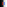

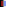

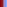

haar_tb
Top half (+) minus bottom half (−): positive when the top is brighter.
fn = g_timed(UTCGP.bundle_number_haarFromImg[:haar_tb].fn)
(fn(haar_tb_intensity, 0.5, 2), fn(haar_tb_binary, 0.5, 2))(1.0, 1.0)

haar_diag_main
Top-left and bottom-right quadrants (+) minus top-right and bottom-left quadrants (−): positive when the bright parts lie along the main diagonal (top-left to bottom-right).
fn = g_timed(UTCGP.bundle_number_haarFromImg[:haar_diag_main].fn)
(fn(haar_diag_main_intensity, 0.5, 2), fn(haar_diag_main_binary, 0.5, 2))(0.75, 0.75)

haar_diag_anti
Top-right and bottom-left quadrants (+) minus top-left and bottom-right quadrants (−): positive when the bright parts lie along the anti-diagonal (top-right to bottom-left).
fn = g_timed(UTCGP.bundle_number_haarFromImg[:haar_diag_anti].fn)
(fn(haar_diag_anti_intensity, 0.5, 2), fn(haar_diag_anti_binary, 0.5, 2))(0.625, 0.625)

haar_center_surround
Central rectangle (the middle third, +) minus the rest of the window (−): positive for a bright spot on a darker background.
fn = g_timed(UTCGP.bundle_number_haarFromImg[:haar_center_surround].fn)
(fn(haar_center_surround_intensity, 0.5, 2), fn(haar_center_surround_binary, 0.5, 2))(1.0, 1.0)

haar_three_h
Left and right bands (+) minus the middle band (−), three equal vertical bands centred in the window: positive for a dark vertical line between brighter areas.
fn = g_timed(UTCGP.bundle_number_haarFromImg[:haar_three_h].fn)
(fn(haar_three_h_intensity, 0.5, 2), fn(haar_three_h_binary, 0.5, 2))(1.0, 1.0)

haar_three_v
Top and bottom bands (+) minus the middle band (−), three equal horizontal bands centred in the window: positive for a dark horizontal line between brighter areas.
fn = g_timed(UTCGP.bundle_number_haarFromImg[:haar_three_v].fn)
(fn(haar_three_v_intensity, 0.5, 2), fn(haar_three_v_binary, 0.5, 2))(1.0, 1.0)

Arithmetic
Module
UTCGP.number_arithmetic — Module
Scalar arithmetic.
The fallback returns an Int. To target another type, re-point the bundle with update_caster! and update_fallback!.
Bundles
The exhaustive, always-current list of operators in each bundle is on the Bundle Catalogue page.
Functions
UTCGP.number_arithmetic.number_sum — Function
number_sum(a::Number, b::Number, args...)Returns a+b
julia> number_sum(0,1)
1UTCGP.number_arithmetic.number_minus — Function
number_minus(a::Number, b::Number, args...)Returns a-b
julia> number_minus(0,1)
-1UTCGP.number_arithmetic.number_mult — Function
number_mult(a::Number, b::Number, args...)Returns a*b
julia> number_mult(3,3)
9UTCGP.number_arithmetic.number_div — Function
number_div(a::Number, b::Number, args...)Throws DivideError if the divisor is equal to 0.
Returns a/b
julia> number_div(3,3)
1.0UTCGP.number_arithmetic.safe_div — Function
safe_div(a::Number, b::Number, args...)If the divisor is equal (==) to 0, then the function returns 0 and does not raise an Error.
Else, the division works as expected.
julia> safe_div(3,0)
0Reduce functions
Module
UTCGP.number_reduce — Module
Reduce a numeric list to a single number.
Bundles
The exhaustive, always-current list of operators in each bundle is on the Bundle Catalogue page.
Functions
UTCGP.number_reduce.reduce_sum — Function
reduce_sum(from :: Vector{<:Number}, args...)Returns the sum of the vector
julia> reduce_sum([1,2,3])
6UTCGP.number_reduce.reduce_min — Function
reduce_min(from::Vector{<:Number}, args...)Returns the minimum in the vector.
julia> reduce_min([1,2,3])
1UTCGP.number_reduce.reduce_max — Function
reduce_max(from::Vector{<:Number}, args...)Returns the maximum in the vector.
julia> reduce_max([1,2,3])
3UTCGP.number_reduce.reduce_argmin — Function
reduce_argmin(from::Vector{<:Number}, args...)Returns the argmin of the vector.
julia> reduce_argmin([1,2,3])
1UTCGP.number_reduce.reduce_argmax — Function
reduce_argmax(from::Vector{<:Number}, args...)Returns the argmax of the vector.
julia> reduce_argmax([1,2,3])
3UTCGP.number_reduce.reduce_length — Function
reduce_length(from::Vector{<:Any}, args...)Returns the length of the vector
reduce_length(from::String, args...)Return the length of the string.
julia> reduce_length(collect(1:10))
10Image to Number
The bridges from an image chromosome to a scalar one. Worked examples for the region and Haar families are above; reduce_* operators summarise the whole image at once.
Modules
UTCGP.number_reduceFromImg — Module
Reduce a whole image to a single number, and locate its brightest point.
Bundles
The exhaustive, always-current list of operators in each bundle is on the Bundle Catalogue page.
UTCGP.number_regionFromImg — Module
Statistics over a rectangular patch of an image, centred on normalised coordinates in [0, 1].
Bundles
The exhaustive, always-current list of operators in each bundle is on the Bundle Catalogue page.
UTCGP.number_haarFromImg — Module
Haar-like rectangular image-to-float features.
Bundles
The exhaustive, always-current list of operators in each bundle is on the Bundle Catalogue page.
UTCGP.number_imgRegionCommon — Module
Shared image-region helpers for the image-to-float number libraries (region_*, haar_*).
Coordinates are normalised to [0, 1] (0 = first pixel, 1 = last); non-finite inputs fall back to the image centre (0.5) and sizes to 1, so values coming from evolved programs never throw.
Transcendental
Module
UTCGP.number_transcendental — Module
Transcendental constants and functions.
The fallback returns 0. To target another type, re-point the bundle with update_caster! and update_fallback!.
Bundles
The exhaustive, always-current list of operators in each bundle is on the Bundle Catalogue page.
Bundles
UTCGP.number_arithmetic.bundle_number_arithmetic — Constant
bundle_number_arithmeticScalar arithmetic: number_sum, number_minus, number_mult, number_div, power_of, and safe_div, which returns 0 instead of failing on a zero denominator.
UTCGP.number_arithmetic.bundle_number_arithmetic_sr — Constant
bundle_number_arithmetic_srUnary arithmetic used by symbolic regression: number_square, number_cube, number_negate, and number_inverse, which returns 0 for a zero input. Kept apart from bundle_number_arithmetic so libraries built from that bundle are unchanged.
UTCGP.number_reduce.bundle_number_reduce — Constant
bundle_number_reduceReduce a numeric list to one number: reduce_sum, reduce_min, reduce_max, reduce_argmin, reduce_argmax, reduce_length.
UTCGP.number_transcendental.bundle_number_transcendental — Constant
bundle_number_transcendentalTranscendental scalars: the constant pi_, and exp_, log_, log10_.
UTCGP.number_transcendental.bundle_number_transcendental_sr — Constant
bundle_number_transcendental_srTranscendental functions used by symbolic regression: sin_, cos_ (radians) and sqrt_, which takes the square root of |a| so it never fails. Kept apart from bundle_number_transcendental so libraries built from that bundle are unchanged.
UTCGP.number_reduceFromImg.bundle_number_reduceFromImg — Constant
bundle_number_reduceFromImgWhole-image statistics, the main image-to-scalar bridge.
Shape: reduce_length, reduce_biggestAxis, reduce_smallerAxis. Histogram: reduce_histMode, reduce_histModeCount, reduce_nColors. Content: reduce_propWhite, reduce_propBlack, reduce_mean, reduce_median, reduce_std, reduce_maximum, reduce_minimum.
A scalar obtained this way can be fed straight back to an image operator as a parameter, which is the multimodal loop MAGE is built around.
UTCGP.number_reduceFromImg.bundle_number_coordinatesFromImg — Constant
bundle_number_coordinatesFromImgRow/column coordinates of the maximal sample in a 2D or 3D array. For RGB, the winning sample is the largest channel value (not luminance); for volumes these are the row and column of the brightest voxel. Operators: experimental_horizontal_argmax and experimental_vertical_argmax.
UTCGP.number_reduceFromImg.bundle_number_relativeCoordinatesFromImg — Constant
bundle_number_relativeCoordinatesFromImgCoordinates of an image's brightest point as a fraction of its size: experimental_horizontal_relative_argmax and experimental_vertical_relative_argmax.
Being size-relative, these compose with the region operators, which take relative coordinates.
UTCGP.number_regionFromImg.bundle_number_regionFromImg — Constant
bundle_number_regionFromImgStatistics over a rectangular region of an image, located by relative coordinates.
Ten statistics — region_mean, region_std, region_min, region_max, region_sum, region_median, region_range, region_contrast, region_energy, region_entropy — each in four window sizes: a fixed 3 × 3 window (no suffix), and the _5p, _10p and _20p variants whose side is 5%, 10% and 20% of the image's shorter side (odd, at least 3 pixels).
Every operator takes (img, cx, cy): the window's centre as normalised coordinates (cx = column, cy = row, 0 to 1). Windows are clipped at the image border.
region_contrast is the mean of the window minus the mean of the ring around it: the 5 × 5 window without the 3 × 3 one, or for the _<pct>p variants a window of half-width 2 · half + 1 (at most half the image).
UTCGP.number_haarFromImg.bundle_number_haarFromImg — Constant
bundle_number_haarFromImgHaar-like contrasts between neighbouring regions of an image: haar_lr, haar_tb, haar_diag_main, haar_diag_anti, haar_center_surround, haar_three_h, haar_three_v.
The same family of features used by cascade detectors, here available as evolvable operators. Every operator takes (img, position, size):
position ∈ [0, 1]picks the window's centre pixel by walking the pixels in column-major order (down the first column, then down the second, …):0is the top-left pixel,1the bottom-right one. One number therefore encodes both row and column.sizeis the window's half-width in pixels (round(abs(size)), at least 1): the window is(2·size + 1)pixels square, clipped at the border.
The value is the mean of the "+" rectangles minus the mean of the "−" rectangles (see the pictures in the docs, drawn from the same weight masks). Non-finite inputs fall back to the centre and to size = 1.
Timings for the examples
Measured during this documentation build. See Timing methodology for measurement limits and input cases that can make operators expensive.
orientation summary assets
Julia 1.13.2; znver5; 1 Julia thread(s); optimisation level 2.
Times are warmed wall-clock measurements of the actual calls above, including invokelatest and allocations. Loading, factory generation and image rendering are excluded. CPU load and garbage collection affect these values. The maximum is the slowest observed sample, not a worst-case bound.
| Input | Dimensions | Pixel storage |
|---|---|---|
| image #1 | 30×30 | IntensityPixel{FixedPointNumbers.N0f8} |
| image #2 | 30×30 | IntensityPixel{FixedPointNumbers.N0f8} |
| image #3 | 30×30 | IntensityPixel{FixedPointNumbers.N0f8} |
| image #4 | 30×30 | IntensityPixel{FixedPointNumbers.N0f8} |
| image #5 | 30×30 | IntensityPixel{FixedPointNumbers.N0f8} |
| image #6 | 30×30 | IntensityPixel{FixedPointNumbers.N0f8} |
| image #7 | 30×30 | IntensityPixel{FixedPointNumbers.N0f8} |
Numeric-only plot calls of the same operator and arity are grouped: argument ranges cover the sampled values, the median is the median of the per-case medians, and the maximum covers every observed sample. Image calls keep a row for each input/parameter combination.
| Operator | Inputs | Output | Median (µs) | Observed max (µs) | Allocated bytes (median) | Cases / samples |
|---|---|---|---|---|---|---|
orientation_energy_0 | image #1 | Float64 | 24.06 | 93.4 | 52336 | 1 / 3 |
orientation_energy_45 | image #1 | Float64 | 23.65 | 73.69 | 52336 | 1 / 3 |
orientation_energy_90 | image #1 | Float64 | 24.06 | 89.68 | 52336 | 1 / 3 |
orientation_energy_135 | image #1 | Float64 | 24.09 | 73.29 | 52336 | 1 / 3 |
dominant_orientation | image #1 | Float64 | 25.03 | 71.1 | 52336 | 1 / 3 |
orientation_coherence | image #1 | Float64 | 30.12 | 73.26 | 52336 | 1 / 3 |
orientation_spread | image #1 | Float64 | 31.59 | 124.59 | 52336 | 1 / 3 |
orientation_energy_0 | image #2 | Float64 | 25.49 | 27.44 | 52336 | 1 / 3 |
orientation_energy_45 | image #2 | Float64 | 24.5 | 24.66 | 52336 | 1 / 3 |
orientation_energy_90 | image #2 | Float64 | 25.02 | 27.71 | 52336 | 1 / 3 |
orientation_energy_135 | image #2 | Float64 | 24.82 | 25.38 | 52336 | 1 / 3 |
dominant_orientation | image #2 | Float64 | 26.09 | 28.28 | 52336 | 1 / 3 |
orientation_coherence | image #2 | Float64 | 31.95 | 32.01 | 52336 | 1 / 3 |
orientation_spread | image #2 | Float64 | 32.89 | 33.09 | 52336 | 1 / 3 |
orientation_energy_0 | image #3 | Float64 | 24.11 | 24.21 | 52336 | 1 / 3 |
orientation_energy_45 | image #3 | Float64 | 23.68 | 24.66 | 52336 | 1 / 3 |
orientation_energy_90 | image #3 | Float64 | 24.51 | 25.1 | 52336 | 1 / 3 |
orientation_energy_135 | image #3 | Float64 | 24.39 | 24.68 | 52336 | 1 / 3 |
dominant_orientation | image #3 | Float64 | 24.27 | 25.2 | 52336 | 1 / 3 |
orientation_coherence | image #3 | Float64 | 31.13 | 31.71 | 52336 | 1 / 3 |
orientation_spread | image #3 | Float64 | 31.11 | 31.34 | 52336 | 1 / 3 |
orientation_energy_0 | image #4 | Float64 | 27.51 | 28.14 | 52336 | 1 / 3 |
orientation_energy_45 | image #4 | Float64 | 27.08 | 28.43 | 52336 | 1 / 3 |
orientation_energy_90 | image #4 | Float64 | 27.28 | 29.44 | 52336 | 1 / 3 |
orientation_energy_135 | image #4 | Float64 | 26.77 | 27.12 | 52336 | 1 / 3 |
dominant_orientation | image #4 | Float64 | 27.14 | 27.48 | 52336 | 1 / 3 |
orientation_coherence | image #4 | Float64 | 35.29 | 35.31 | 52336 | 1 / 3 |
orientation_spread | image #4 | Float64 | 34.69 | 35.78 | 52336 | 1 / 3 |
orientation_energy_0 | image #5 | Float64 | 24.51 | 25.27 | 52336 | 1 / 3 |
orientation_energy_45 | image #5 | Float64 | 23.9 | 24.1 | 52336 | 1 / 3 |
orientation_energy_90 | image #5 | Float64 | 25.03 | 25.94 | 52336 | 1 / 3 |
orientation_energy_135 | image #5 | Float64 | 24.31 | 24.54 | 52336 | 1 / 3 |
dominant_orientation | image #5 | Float64 | 23.98 | 24.34 | 52336 | 1 / 3 |
orientation_coherence | image #5 | Float64 | 33.75 | 34.65 | 52336 | 1 / 3 |
orientation_spread | image #5 | Float64 | 33.14 | 33.82 | 52336 | 1 / 3 |
orientation_energy_0 | image #6 | Float64 | 27.16 | 27.45 | 52336 | 1 / 3 |
orientation_energy_45 | image #6 | Float64 | 27.46 | 27.73 | 52336 | 1 / 3 |
orientation_energy_90 | image #6 | Float64 | 27.11 | 29.49 | 52336 | 1 / 3 |
orientation_energy_135 | image #6 | Float64 | 26.85 | 28.13 | 52336 | 1 / 3 |
dominant_orientation | image #6 | Float64 | 27.45 | 28.76 | 52336 | 1 / 3 |
orientation_coherence | image #6 | Float64 | 33.85 | 35.53 | 52336 | 1 / 3 |
orientation_spread | image #6 | Float64 | 33.32 | 34.73 | 52336 | 1 / 3 |
orientation_energy_0 | image #7 | Float64 | 27.51 | 28.15 | 52336 | 1 / 3 |
orientation_energy_45 | image #7 | Float64 | 28.38 | 35.36 | 52336 | 1 / 3 |
orientation_energy_90 | image #7 | Float64 | 27.87 | 28.31 | 52336 | 1 / 3 |
orientation_energy_135 | image #7 | Float64 | 27.49 | 27.9 | 52336 | 1 / 3 |
dominant_orientation | image #7 | Float64 | 27.62 | 28.03 | 52336 | 1 / 3 |
orientation_coherence | image #7 | Float64 | 32.01 | 32.72 | 52336 | 1 / 3 |
orientation_spread | image #7 | Float64 | 31.65 | 32.35 | 52336 | 1 / 3 |
haar from img assets
Julia 1.13.2; znver5; 1 Julia thread(s); optimisation level 2.
Times are warmed wall-clock measurements of the actual calls above, including invokelatest and allocations. Loading, factory generation and image rendering are excluded. CPU load and garbage collection affect these values. The maximum is the slowest observed sample, not a worst-case bound.
| Input | Dimensions | Pixel storage |
|---|---|---|
| image #1 | 7×7 | IntensityPixel{FixedPointNumbers.N0f8} |
| image #2 | 7×7 | BinaryPixel{Bool} |
| image #3 | 7×7 | IntensityPixel{FixedPointNumbers.N0f8} |
| image #4 | 7×7 | BinaryPixel{Bool} |
| image #5 | 7×7 | IntensityPixel{FixedPointNumbers.N0f8} |
| image #6 | 7×7 | BinaryPixel{Bool} |
| image #7 | 7×7 | IntensityPixel{FixedPointNumbers.N0f8} |
| image #8 | 7×7 | BinaryPixel{Bool} |
| image #9 | 7×7 | IntensityPixel{FixedPointNumbers.N0f8} |
| image #10 | 7×7 | BinaryPixel{Bool} |
| image #11 | 7×7 | IntensityPixel{FixedPointNumbers.N0f8} |
| image #12 | 7×7 | BinaryPixel{Bool} |
| image #13 | 7×7 | IntensityPixel{FixedPointNumbers.N0f8} |
| image #14 | 7×7 | BinaryPixel{Bool} |
Numeric-only plot calls of the same operator and arity are grouped: argument ranges cover the sampled values, the median is the median of the per-case medians, and the maximum covers every observed sample. Image calls keep a row for each input/parameter combination.
| Operator | Inputs | Output | Median (µs) | Observed max (µs) | Allocated bytes (median) | Cases / samples |
|---|---|---|---|---|---|---|
haar_lr | image #1; 0.5; 1 | Float64 | 1.42 | 15.95 | 1376 | 1 / 3 |
haar_lr | image #1; 0.5; 2 | Float64 | 1.18 | 1.85 | 1760 | 1 / 3 |
haar_lr | image #1; 0.5; 3 | Float64 | 0.82 | 0.95 | 2368 | 1 / 3 |
haar_lr | image #2; 0.5; 2 | Float64 | 0.96 | 11.13 | 1744 | 1 / 3 |
haar_lr | image #2; 0.75; 2 | Float64 | 0.88 | 1.29 | 1584 | 1 / 3 |
haar_tb | image #3; 0.5; 2 | Float64 | 1.14 | 16.96 | 1760 | 1 / 3 |
haar_tb | image #4; 0.5; 2 | Float64 | 1.38 | 4.05 | 1744 | 1 / 3 |
haar_diag_main | image #5; 0.5; 2 | Float64 | 1.02 | 15.52 | 1728 | 1 / 3 |
haar_diag_main | image #6; 0.5; 2 | Float64 | 0.98 | 3.89 | 1712 | 1 / 3 |
haar_diag_anti | image #7; 0.5; 2 | Float64 | 1.43 | 14.77 | 1728 | 1 / 3 |
haar_diag_anti | image #8; 0.5; 2 | Float64 | 1.08 | 2.72 | 1712 | 1 / 3 |
haar_center_surround | image #9; 0.5; 2 | Float64 | 1.59 | 9.4 | 1792 | 1 / 3 |
haar_center_surround | image #10; 0.5; 2 | Float64 | 0.74 | 2.28 | 1776 | 1 / 3 |
haar_three_h | image #11; 0.5; 2 | Float64 | 1.21 | 14.13 | 1712 | 1 / 3 |
haar_three_h | image #12; 0.5; 2 | Float64 | 0.97 | 2.28 | 1696 | 1 / 3 |
haar_three_v | image #13; 0.5; 2 | Float64 | 1.14 | 7.06 | 1712 | 1 / 3 |
haar_three_v | image #14; 0.5; 2 | Float64 | 0.96 | 3.54 | 1696 | 1 / 3 |
region statistics
Julia 1.13.2; znver5; 1 Julia thread(s); optimisation level 2.
Times are warmed wall-clock measurements of the actual calls above, including invokelatest and allocations. Loading, factory generation and image rendering are excluded. CPU load and garbage collection affect these values. The maximum is the slowest observed sample, not a worst-case bound.
| Input | Dimensions | Pixel storage |
|---|---|---|
| image #1 | 30×30 | IntensityPixel{FixedPointNumbers.N0f8} |
| image #2 | 30×30 | BinaryPixel{Bool} |
| image #3 | 30×30 | SegmentPixel{Int64} |
Numeric-only plot calls of the same operator and arity are grouped: argument ranges cover the sampled values, the median is the median of the per-case medians, and the maximum covers every observed sample. Image calls keep a row for each input/parameter combination.
| Operator | Inputs | Output | Median (µs) | Observed max (µs) | Allocated bytes (median) | Cases / samples |
|---|---|---|---|---|---|---|
region_mean | image #1; 0.4; 0.7 | Float64 | 1.41 | 11.25 | 8472 | 1 / 3 |
region_mean | image #2; 0.4; 0.7 | Float64 | 1.76 | 16.27 | 7640 | 1 / 3 |
region_mean | image #3; 0.4; 0.7 | Float64 | 0.99 | 10.12 | 14736 | 1 / 3 |
region_std | image #1; 0.7; 0.3 | Float64 | 1.4 | 12.79 | 8472 | 1 / 3 |
region_std | image #2; 0.7; 0.3 | Float64 | 1.4 | 5.31 | 7640 | 1 / 3 |
region_std | image #3; 0.7; 0.3 | Float64 | 1.15 | 4.47 | 14736 | 1 / 3 |
region_min | image #1; 0.1; 0.8 | Float64 | 1.29 | 10.96 | 8472 | 1 / 3 |
region_min | image #2; 0.1; 0.8 | Float64 | 1.78 | 8.44 | 7640 | 1 / 3 |
region_min | image #3; 0.1; 0.8 | Float64 | 0.88 | 23.04 | 14736 | 1 / 3 |
region_max | image #1; 0.4; 0.4 | Float64 | 1.63 | 26.68 | 8472 | 1 / 3 |
region_max | image #2; 0.4; 0.4 | Float64 | 1.84 | 12.43 | 7640 | 1 / 3 |
region_max | image #3; 0.4; 0.4 | Float64 | 1.96 | 4.65 | 14736 | 1 / 3 |
region_sum | image #1; 0.7; 0.0 | Float64 | 1.6 | 9.53 | 8472 | 1 / 3 |
region_sum | image #2; 0.7; 0.0 | Float64 | 1.71 | 4.87 | 7640 | 1 / 3 |
region_sum | image #3; 0.7; 0.0 | Float64 | 1.73 | 4.43 | 14736 | 1 / 3 |
region_median | image #1; 0.1; 0.5 | Float64 | 1.5 | 16.71 | 8600 | 1 / 3 |
region_median | image #2; 0.1; 0.5 | Float64 | 1.78 | 5.13 | 7768 | 1 / 3 |
region_median | image #3; 0.1; 0.5 | Float64 | 1.66 | 6.48 | 14864 | 1 / 3 |
region_range | image #1; 0.4; 0.1 | Float64 | 1.39 | 27.93 | 8472 | 1 / 3 |
region_range | image #2; 0.4; 0.1 | Float64 | 1.61 | 5.53 | 7640 | 1 / 3 |
region_range | image #3; 0.4; 0.1 | Float64 | 1.29 | 3.12 | 14736 | 1 / 3 |
region_contrast | image #1; 0.7; 0.6 | Float64 | 1.23 | 15.5 | 8472 | 1 / 3 |
region_contrast | image #2; 0.7; 0.6 | Float64 | 1.85 | 6.9 | 7640 | 1 / 3 |
region_contrast | image #3; 0.7; 0.6 | Float64 | 0.99 | 5.55 | 14736 | 1 / 3 |
region_energy | image #1; 0.1; 0.2 | Float64 | 1.24 | 14.27 | 8472 | 1 / 3 |
region_energy | image #2; 0.1; 0.2 | Float64 | 1.37 | 4.87 | 7640 | 1 / 3 |
region_energy | image #3; 0.1; 0.2 | Float64 | 0.83 | 5.01 | 14736 | 1 / 3 |
region_entropy | image #1; 0.4; 0.7 | Float64 | 1.42 | 11.92 | 8920 | 1 / 3 |
region_entropy | image #2; 0.4; 0.7 | Float64 | 1.38 | 6.75 | 7960 | 1 / 3 |
region_entropy | image #3; 0.4; 0.7 | Float64 | 1.98 | 7.7 | 15056 | 1 / 3 |
region_mean_5p | image #1; 0.7; 0.3 | Float64 | 1.18 | 13.73 | 8472 | 1 / 3 |
region_mean_5p | image #2; 0.7; 0.3 | Float64 | 1.49 | 6.41 | 7640 | 1 / 3 |
region_mean_5p | image #3; 0.7; 0.3 | Float64 | 1.08 | 4.64 | 14736 | 1 / 3 |
region_mean_10p | image #1; 0.1; 0.8 | Float64 | 1.33 | 12.98 | 8472 | 1 / 3 |
region_mean_10p | image #2; 0.1; 0.8 | Float64 | 1.62 | 4.55 | 7640 | 1 / 3 |
region_mean_10p | image #3; 0.1; 0.8 | Float64 | 1.79 | 3.98 | 14736 | 1 / 3 |
region_mean_20p | image #1; 0.4; 0.4 | Float64 | 1.59 | 10.07 | 8472 | 1 / 3 |
region_mean_20p | image #2; 0.4; 0.4 | Float64 | 1.68 | 4.0 | 7640 | 1 / 3 |
region_mean_20p | image #3; 0.4; 0.4 | Float64 | 1.93 | 3.06 | 14736 | 1 / 3 |
region_std_5p | image #1; 0.7; 0.0 | Float64 | 1.65 | 15.3 | 8472 | 1 / 3 |
region_std_5p | image #2; 0.7; 0.0 | Float64 | 1.81 | 5.51 | 7640 | 1 / 3 |
region_std_5p | image #3; 0.7; 0.0 | Float64 | 1.65 | 4.92 | 14736 | 1 / 3 |
region_std_10p | image #1; 0.1; 0.5 | Float64 | 1.29 | 14.07 | 8472 | 1 / 3 |
region_std_10p | image #2; 0.1; 0.5 | Float64 | 1.81 | 4.83 | 7640 | 1 / 3 |
region_std_10p | image #3; 0.1; 0.5 | Float64 | 1.56 | 4.88 | 14736 | 1 / 3 |
region_std_20p | image #1; 0.4; 0.1 | Float64 | 1.44 | 12.09 | 8472 | 1 / 3 |
region_std_20p | image #2; 0.4; 0.1 | Float64 | 1.55 | 5.33 | 7640 | 1 / 3 |
region_std_20p | image #3; 0.4; 0.1 | Float64 | 1.42 | 3.48 | 14736 | 1 / 3 |
region_min_5p | image #1; 0.7; 0.6 | Float64 | 1.66 | 16.0 | 8472 | 1 / 3 |
region_min_5p | image #2; 0.7; 0.6 | Float64 | 1.33 | 3.46 | 7640 | 1 / 3 |
region_min_5p | image #3; 0.7; 0.6 | Float64 | 1.38 | 4.43 | 14736 | 1 / 3 |
region_min_10p | image #1; 0.1; 0.2 | Float64 | 1.15 | 10.33 | 8472 | 1 / 3 |
region_min_10p | image #2; 0.1; 0.2 | Float64 | 1.56 | 4.87 | 7640 | 1 / 3 |
region_min_10p | image #3; 0.1; 0.2 | Float64 | 1.26 | 5.36 | 14736 | 1 / 3 |
region_min_20p | image #1; 0.4; 0.7 | Float64 | 1.51 | 15.69 | 8472 | 1 / 3 |
region_min_20p | image #2; 0.4; 0.7 | Float64 | 1.56 | 5.01 | 7640 | 1 / 3 |
region_min_20p | image #3; 0.4; 0.7 | Float64 | 1.06 | 4.02 | 14736 | 1 / 3 |
region_max_5p | image #1; 0.7; 0.3 | Float64 | 1.22 | 12.85 | 8472 | 1 / 3 |
region_max_5p | image #2; 0.7; 0.3 | Float64 | 1.17 | 3.54 | 7640 | 1 / 3 |
region_max_5p | image #3; 0.7; 0.3 | Float64 | 1.03 | 3.24 | 14736 | 1 / 3 |
region_max_10p | image #1; 0.1; 0.8 | Float64 | 1.08 | 16.64 | 8472 | 1 / 3 |
region_max_10p | image #2; 0.1; 0.8 | Float64 | 1.37 | 4.81 | 7640 | 1 / 3 |
region_max_10p | image #3; 0.1; 0.8 | Float64 | 0.93 | 3.8 | 14736 | 1 / 3 |
region_max_20p | image #1; 0.4; 0.4 | Float64 | 1.28 | 14.15 | 8472 | 1 / 3 |
region_max_20p | image #2; 0.4; 0.4 | Float64 | 1.56 | 3.97 | 7640 | 1 / 3 |
region_max_20p | image #3; 0.4; 0.4 | Float64 | 1.13 | 2.68 | 14736 | 1 / 3 |
region_sum_5p | image #1; 0.7; 0.0 | Float64 | 1.13 | 8.32 | 8472 | 1 / 3 |
region_sum_5p | image #2; 0.7; 0.0 | Float64 | 1.04 | 3.92 | 7640 | 1 / 3 |
region_sum_5p | image #3; 0.7; 0.0 | Float64 | 1.02 | 2.47 | 14736 | 1 / 3 |
region_sum_10p | image #1; 0.1; 0.5 | Float64 | 1.18 | 7.29 | 8472 | 1 / 3 |
region_sum_10p | image #2; 0.1; 0.5 | Float64 | 1.34 | 4.73 | 7640 | 1 / 3 |
region_sum_10p | image #3; 0.1; 0.5 | Float64 | 0.95 | 4.71 | 14736 | 1 / 3 |
region_sum_20p | image #1; 0.4; 0.1 | Float64 | 1.53 | 13.99 | 8472 | 1 / 3 |
region_sum_20p | image #2; 0.4; 0.1 | Float64 | 1.67 | 4.24 | 7640 | 1 / 3 |
region_sum_20p | image #3; 0.4; 0.1 | Float64 | 2.04 | 3.7 | 14736 | 1 / 3 |
region_median_5p | image #1; 0.7; 0.6 | Float64 | 2.05 | 11.35 | 8600 | 1 / 3 |
region_median_5p | image #2; 0.7; 0.6 | Float64 | 2.35 | 3.4 | 7768 | 1 / 3 |
region_median_5p | image #3; 0.7; 0.6 | Float64 | 1.92 | 3.3 | 14864 | 1 / 3 |
region_median_10p | image #1; 0.1; 0.2 | Float64 | 1.58 | 12.56 | 8600 | 1 / 3 |
region_median_10p | image #2; 0.1; 0.2 | Float64 | 2.09 | 4.66 | 7768 | 1 / 3 |
region_median_10p | image #3; 0.1; 0.2 | Float64 | 2.1 | 3.98 | 14864 | 1 / 3 |
region_median_20p | image #1; 0.4; 0.7 | Float64 | 2.44 | 18.08 | 9432 | 1 / 3 |
region_median_20p | image #2; 0.4; 0.7 | Float64 | 2.2 | 4.98 | 8600 | 1 / 3 |
region_median_20p | image #3; 0.4; 0.7 | Float64 | 1.93 | 4.15 | 15696 | 1 / 3 |
region_range_5p | image #1; 0.7; 0.3 | Float64 | 1.25 | 10.6 | 8472 | 1 / 3 |
region_range_5p | image #2; 0.7; 0.3 | Float64 | 1.49 | 4.48 | 7640 | 1 / 3 |
region_range_5p | image #3; 0.7; 0.3 | Float64 | 1.02 | 3.8 | 14736 | 1 / 3 |
region_range_10p | image #1; 0.1; 0.8 | Float64 | 1.39 | 11.51 | 8472 | 1 / 3 |
region_range_10p | image #2; 0.1; 0.8 | Float64 | 1.26 | 4.38 | 7640 | 1 / 3 |
region_range_10p | image #3; 0.1; 0.8 | Float64 | 1.04 | 3.91 | 14736 | 1 / 3 |
region_range_20p | image #1; 0.4; 0.4 | Float64 | 1.46 | 8.96 | 8472 | 1 / 3 |
region_range_20p | image #2; 0.4; 0.4 | Float64 | 1.61 | 4.74 | 7640 | 1 / 3 |
region_range_20p | image #3; 0.4; 0.4 | Float64 | 1.34 | 4.26 | 14736 | 1 / 3 |
region_contrast_5p | image #1; 0.7; 0.0 | Float64 | 1.32 | 7.95 | 8472 | 1 / 3 |
region_contrast_5p | image #2; 0.7; 0.0 | Float64 | 1.46 | 4.12 | 7640 | 1 / 3 |
region_contrast_5p | image #3; 0.7; 0.0 | Float64 | 1.33 | 4.37 | 14736 | 1 / 3 |
region_contrast_10p | image #1; 0.1; 0.5 | Float64 | 1.39 | 16.05 | 8472 | 1 / 3 |
region_contrast_10p | image #2; 0.1; 0.5 | Float64 | 1.46 | 3.64 | 7640 | 1 / 3 |
region_contrast_10p | image #3; 0.1; 0.5 | Float64 | 1.14 | 4.0 | 14736 | 1 / 3 |
region_contrast_20p | image #1; 0.4; 0.1 | Float64 | 1.34 | 7.73 | 8472 | 1 / 3 |
region_contrast_20p | image #2; 0.4; 0.1 | Float64 | 1.35 | 4.17 | 7640 | 1 / 3 |
region_contrast_20p | image #3; 0.4; 0.1 | Float64 | 0.94 | 3.49 | 14736 | 1 / 3 |
region_energy_5p | image #1; 0.7; 0.6 | Float64 | 1.61 | 17.52 | 8472 | 1 / 3 |
region_energy_5p | image #2; 0.7; 0.6 | Float64 | 1.9 | 7.92 | 7640 | 1 / 3 |
region_energy_5p | image #3; 0.7; 0.6 | Float64 | 1.94 | 6.51 | 14736 | 1 / 3 |
region_energy_10p | image #1; 0.1; 0.2 | Float64 | 1.99 | 14.36 | 8472 | 1 / 3 |
region_energy_10p | image #2; 0.1; 0.2 | Float64 | 1.69 | 6.19 | 7640 | 1 / 3 |
region_energy_10p | image #3; 0.1; 0.2 | Float64 | 1.86 | 7.05 | 14736 | 1 / 3 |
region_energy_20p | image #1; 0.4; 0.7 | Float64 | 1.56 | 15.87 | 8472 | 1 / 3 |
region_energy_20p | image #2; 0.4; 0.7 | Float64 | 1.33 | 4.79 | 7640 | 1 / 3 |
region_energy_20p | image #3; 0.4; 0.7 | Float64 | 1.06 | 4.76 | 14736 | 1 / 3 |
region_entropy_5p | image #1; 0.7; 0.3 | Float64 | 1.85 | 9.8 | 8920 | 1 / 3 |
region_entropy_5p | image #2; 0.7; 0.3 | Float64 | 1.55 | 4.9 | 8088 | 1 / 3 |
region_entropy_5p | image #3; 0.7; 0.3 | Float64 | 1.5 | 3.54 | 15184 | 1 / 3 |
region_entropy_10p | image #1; 0.1; 0.8 | Float64 | 1.49 | 8.89 | 8920 | 1 / 3 |
region_entropy_10p | image #2; 0.1; 0.8 | Float64 | 1.41 | 3.54 | 7960 | 1 / 3 |
region_entropy_10p | image #3; 0.1; 0.8 | Float64 | 1.16 | 3.42 | 15056 | 1 / 3 |
region_entropy_20p | image #1; 0.4; 0.4 | Float64 | 2.16 | 18.19 | 9624 | 1 / 3 |
region_entropy_20p | image #2; 0.4; 0.4 | Float64 | 1.6 | 3.44 | 8792 | 1 / 3 |
region_entropy_20p | image #3; 0.4; 0.4 | Float64 | 1.17 | 2.48 | 15888 | 1 / 3 |